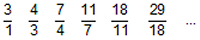

Puzzle 31: Wie heisst die 57-ste Zahl?
Claus betrachtet die Zahlenfolge (bn) 1 3 4 7 11 18 29 ....
Er möchte zuerst herausfinden, wie sich die nächste Zahl aus den vorhergehenden berechnen lässt (rekursive Darstellung).
Dann möchte er aber z.B. die 57-te Zahl direkt berechnen, d.h. ohne alle 56 vorhergehenden Zahlen zu berechnen. Dazu sucht er
die explizite Darstellung für die Folge.
Weiter stellt er sich die Frage:
Gegen welche Zahl streben die Quotienten von aufeinanderfolgenden zwei Zahlen dieser Folge, d.h.
welchen Grenzwert hat die Folge ?
Hinweis: Für die explizite Darstellung bn = ... helfen ihm die Ausführungen über
Fibonacci- und Lucas-Zahlen.
4. November 2006